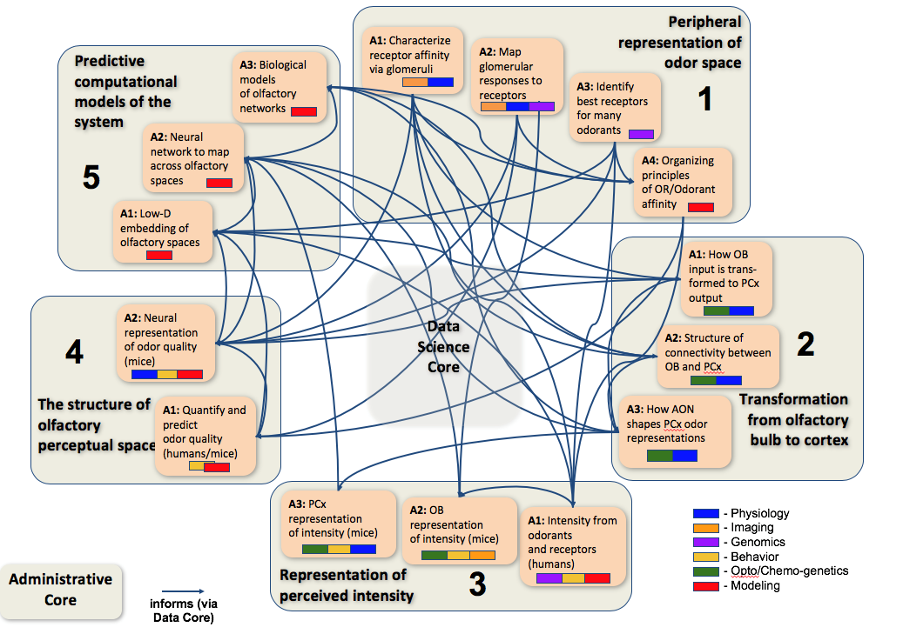

<div class="row">
    <div class="col-sm-12">
        
    </div>
</div>
<style>
    @media (min-width: 992px) {
    .col-sm-6 {
        width: 48%;
    }
}
@media (max-width: 425px) {
    .col-sm-6 {
        margin: 15px 15px;
    }
}
</style>

<div class="row" style="text-align:center; overflow:auto;">
    <div class="col-sm-6 page-box">
        <h3>Data Science</h3>
        <hr />

        <div class="row project">
            <a href="#">
                
            </a>
        </div>

        <hr>

    </div>
    <div class="col-sm-6 page-box" style="margin: 0 15px;">
        <h3>Resources for Modeling</h3>
        <hr />

        <div class="row project">

            <a href="http://github.com/scidash/neuronunit">
                
            </a>
        </div>

        <hr>
    </div>
</div>
